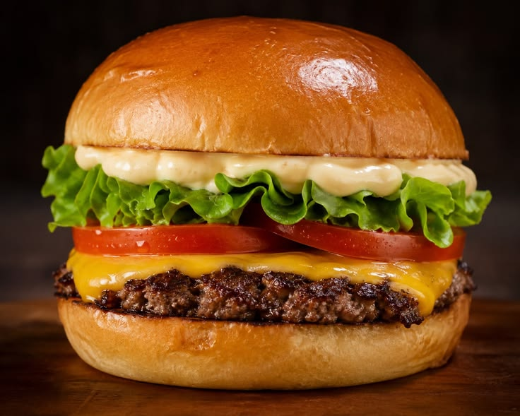

Burger

← Back to Recipes
Description
This classic homemade beef burger is juicy, flavourful, and incredibly satisfying. Made from scratch with simple ingredients, it beats any fast food burger hands down.
Stack it high with your favourite toppings: lettuce, tomato, melted cheese, pickles, and a generous spread of sauce.
Ingredients
- 500g (1 lb) ground beef (80/20 fat ratio for juiciness)
- 1 teaspoon garlic powder
- 1 teaspoon onion powder
- Salt and black pepper to taste
- 4 burger buns
- 4 slices cheddar cheese
- Lettuce leaves
- 2 tomatoes, sliced
- Ketchup, mustard, or mayo to serve
Steps
- In a large bowl, combine ground beef, garlic powder, onion powder, salt, and pepper. Mix gently until just combined.
- Divide the mixture into 4 equal portions and shape each into a round patty about ¾ inch thick.
- Heat a grill or skillet over medium-high heat and lightly oil the surface.
- Cook the patties for 3 to 4 minutes per side, or until cooked through to your liking.
- Place a slice of cheese on each patty during the last minute of cooking and let it melt.
- Toast the burger buns lightly on the grill.
- Assemble the burger: bun bottom, sauce, lettuce, tomato, patty, and bun top.
Enjoy your burger!
← Back to Recipes